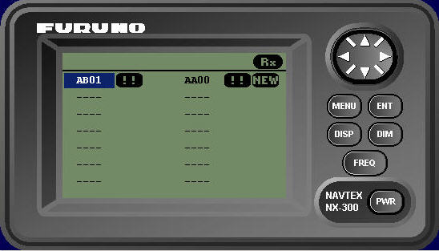

Receptor Navtex
Este panel es un mimético simulado del equipo Furuno NX-300. Contiene los controles y la mayor parte de la funcionalidad del equipo real.

El funcionamiento del equipo puede consultarse en el Manual de Operador del equipo NX-300 que se adjunta como anexo, teniendo en cuenta que las siguientes funciones no están implementadas:
- El ajuste del brillo y contraste de la pantalla mediante la tecla DIM, ya que este ajuste no es necesario en el panel software.
- Las opciones RCV NOTIFY, KEY BEEP y PASAR PANT. del menú FUNCIONES.
- El cambio de idioma mediante la opción LENGUA del menú principal, ya que el equipo se configura en el mismo idioma que la consola del alumno.
- La opción INFO CONEXIONADO del MENU SISTEMA, ya que esta opción muestra el diagrama de conexión entre el equipo y el PC, y por tanto no tiene utilidad en el panel software.
- Las opciones AJUSTE DE FABRICA y TEST del MENU SISTEMA, tampoco tienen utilidad en el panel software.
- Las opciones UNIDADES, DIFER HORA y PREST HORA del MENU SISTEMA no se han implementado y tienen por defecto los siguientes valores:
- UNIDADES: nm, kt
- DIFER HORA: +00:00
- PREST HORA: 24 horas
- El menú PRESENTAC USUARIO no está implementado, ya que no tiene ninguna utilidad para el funcionamiento del equipo simulado.
- El modo DEMO, el modo VIEW y el BORRADO TOTAL no están implementados, ya que no tiene ninguna utilidad para el funcionamiento del equipo simulado.